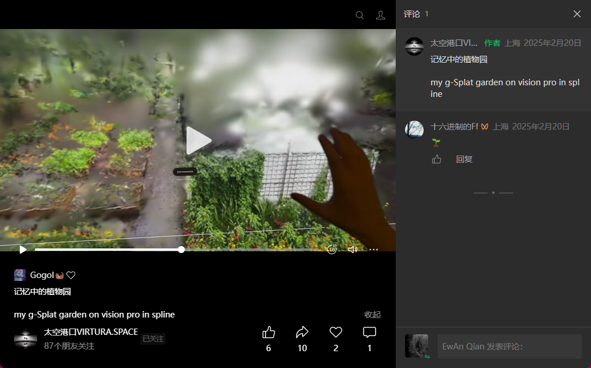
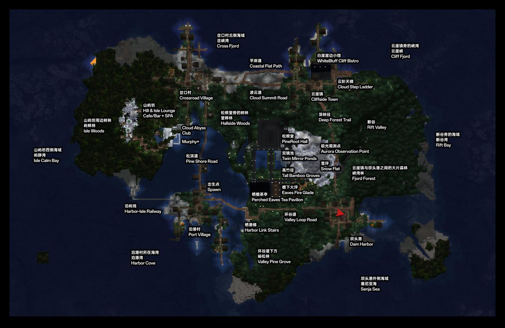
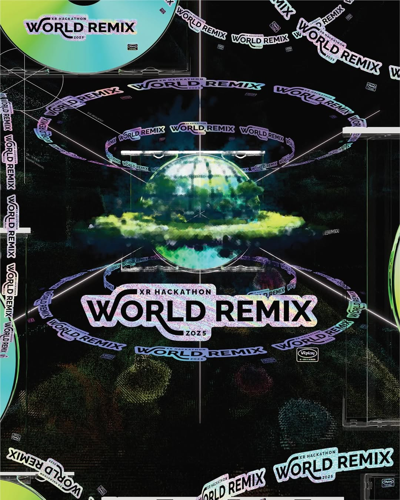

这件作品从一只银色手提箱开始，但目标不是展示"箱子"本身，而是让观众相信：有一种空间确实可以被携带、被中转、被错误投递，然后在现实中被重新开启。
观众先看到实体箱体，再从手机端进入项目主页，理解赛尼亚岛、松间、白屿会与雾庭舱之间的关系；之后通过档案查看器进一步读到错投记录、旅客线索和物件说明，最后在 Vision Pro 中短暂看到一座被压缩的温室从箱体内部展开。
项目采用双层命名结构：
对外：箱中温室 / Greenhouse in Transit —— 项目题名，面向公众与策展语境，保留诗性。
对内：雾庭舱 / Mistgarden Case —— 物件名，项目内部真正的装备级识别名，型号 MG-17 Portable Conservatory Unit。
外层旅居品牌为松间，由白屿会持有，通过潮线网络航行，异常回收由转栈署负责。
赛尼亚岛数字旅居地是整个宇宙的表层入口。Minecraft 版本负责公众游玩与空间认识；项目主页负责对外说明与策展沟通；而《箱中温室》承担的是一条更靠近艺术与 ARG 的入口：它把赛尼亚岛从"地图里的目的地"变成"现实中的一件失物"。
赛尼亚岛是这只舱体的原生归属地，是旅客本该返回的停靠处，是一张地图、一份旅居品牌物料和一场现实错投事件得以被串联的依据。

项目采用三层结构：
项目主页：对外说明，面向策展人、合作方、普通观众，讲清项目是什么、为什么成立、怎么体验。
档案查看器：深层设定，面向 lore 用户和 ARG 用户，负责词条、组织、文件、异常记录。
Markdown 数据源：后续开发与协作，统一的数据源与字段规范。
识别度来自多层气质的叠加：
以下前期实验作为"方法前史"存在，用来说明方法来源：
